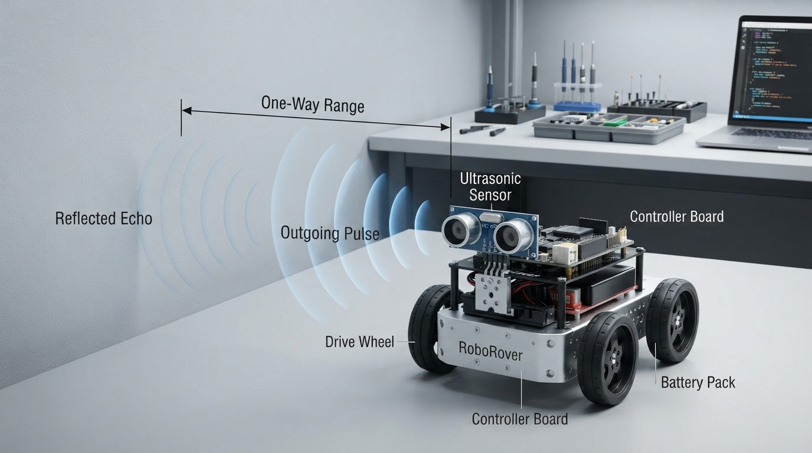

How does a robot estimate distance using sound it cannot hear?
Professor OS Class 11 develops the answer from a simple echo analogy to a working Python simulation. Students learn that an ultrasonic sensor measures round-trip echo time, then applies an assumed speed of sound and divides by two to estimate one-way range.
The lesson includes:
• A step-by-step derivation of d = vt/2
• Unit conversion between milliseconds and seconds
• A worked robot-to-wall calculation
• Executable Python checks and a distance plot
• Prediction activities using STOP/GO thresholds
• Real-world limitations involving soft materials, angled surfaces, vibration, beam spread, temperature, and old echoes
Try the cardboard checkpoint challenge: change the stopping threshold, predict the robot’s behavior, then verify it in code. It is a compact way to connect physics, programming, and robot safety decisions.
Explore Professor OS: https://connect.vin/professor-os
#Robotics #STEMEducation #Python #Sensors
Professor OS Class 11 develops the answer from a simple echo analogy to a working Python simulation. Students learn that an ultrasonic sensor measures round-trip echo time, then applies an assumed speed of sound and divides by two to estimate one-way range.
The lesson includes:
• A step-by-step derivation of d = vt/2
• Unit conversion between milliseconds and seconds
• A worked robot-to-wall calculation
• Executable Python checks and a distance plot
• Prediction activities using STOP/GO thresholds
• Real-world limitations involving soft materials, angled surfaces, vibration, beam spread, temperature, and old echoes
Try the cardboard checkpoint challenge: change the stopping threshold, predict the robot’s behavior, then verify it in code. It is a compact way to connect physics, programming, and robot safety decisions.
Explore Professor OS: https://connect.vin/professor-os
#Robotics #STEMEducation #Python #Sensors

Class 11: How Ultrasonic Sensors Turn Echo Time Into Robot Range
A practical robotics lesson on time of flight, the d=vt/2 equation, Python simulation, measurement error, and why real surfaces can defeat ultrasonic sensing.